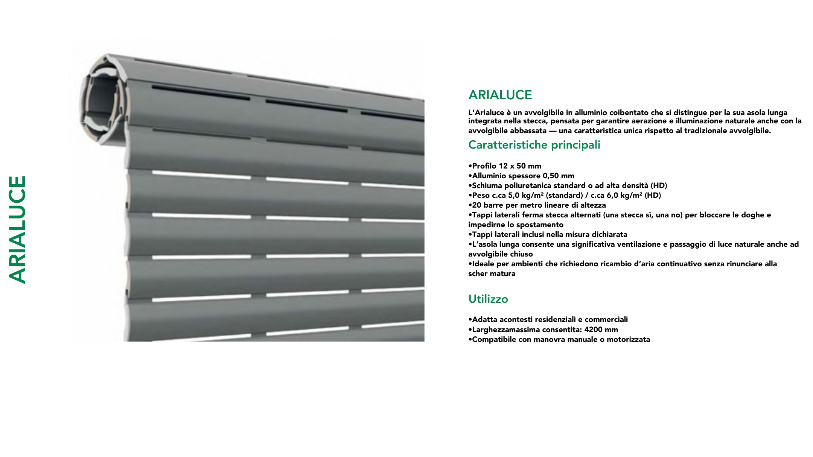

Avvolgibili
ARIALUCE
MODELLO: ARIALUCE PAGINA PDF: 174
TESTO PDF: ARIALUCE •Adatta acontesti residenziali e commerciali •Larghezzamassima consentita: 4200 mm •Compatibile con manovra manuale o motorizzata •Profilo 12 x 50 mm •Alluminio spessore 0,50 mm •Schiuma poliuretanica standard o ad alta densità (HD) •Peso c.ca 5,0 kg/m² (standard) / c.ca 6,0 kg/m² (HD) •20 barre per metro lineare di altezza •Tappi laterali ferma stecca alternati (una stecca sì, una no) per bloccare le doghe e impedirne lo spostamento •Tappi laterali inclusi nella misura dichiarata •L’asola lunga consente una significativa ventilazione e passaggio di luce naturale anche ad avvolgibile chiuso •Ideale per ambienti che richiedono ricambio d’aria continuativo senza rinunciare alla scher matura
L’Arialuce è un avvolgibile in alluminio coibentato che si distingue per la sua asola lunga integrata nella stecca, pensata per garantire aerazione e illuminazione naturale anche con la avvolgibile abbassata — una caratteristica unica rispetto al tradizionale avvolgibile. Caratteristiche principali ARIALUCE Utilizzo